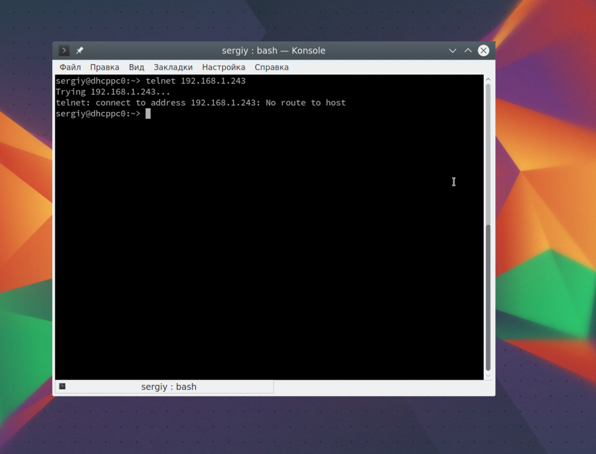
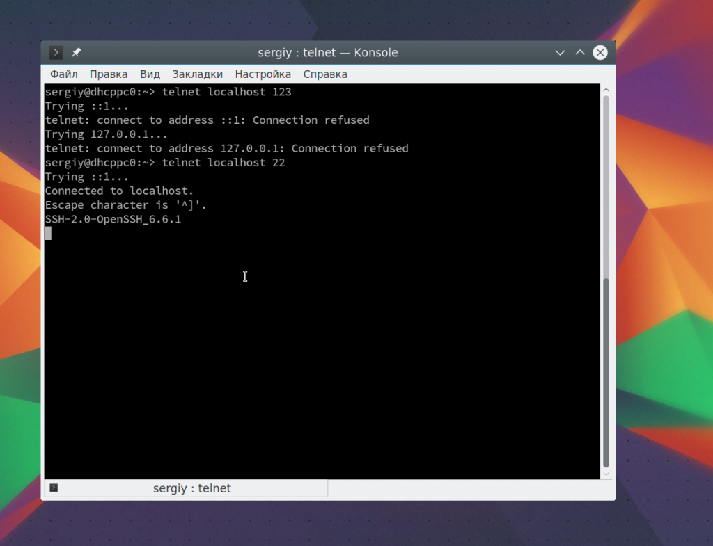
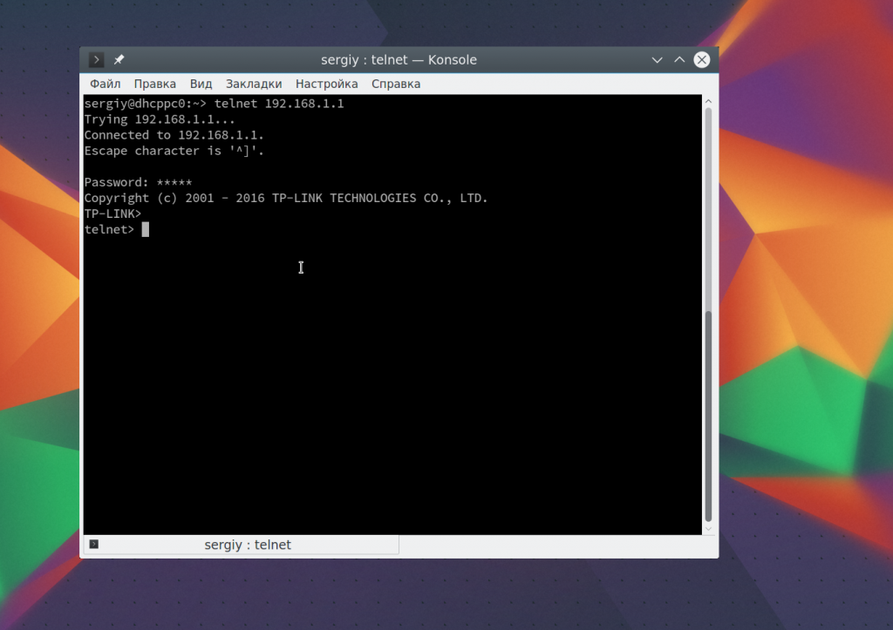
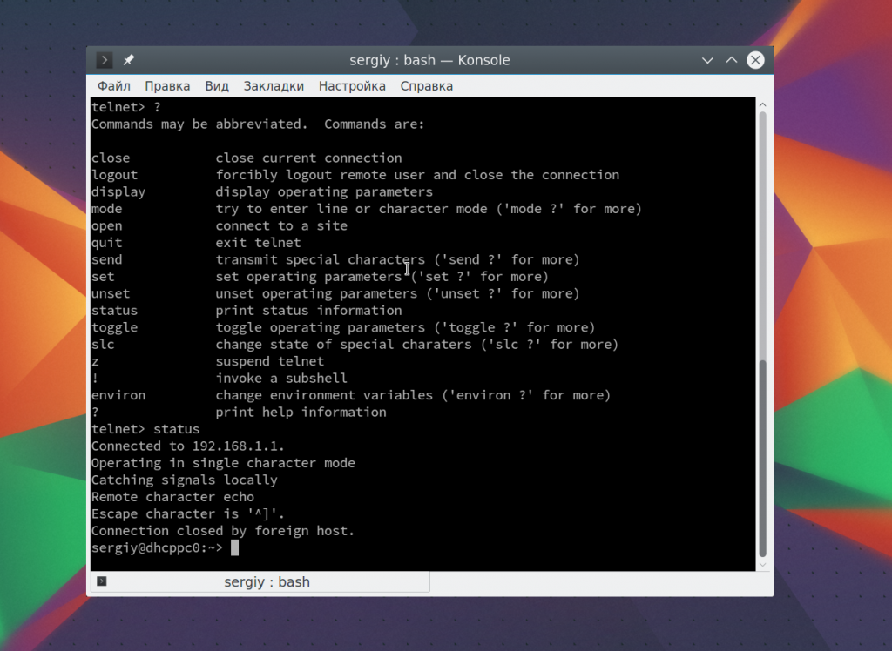
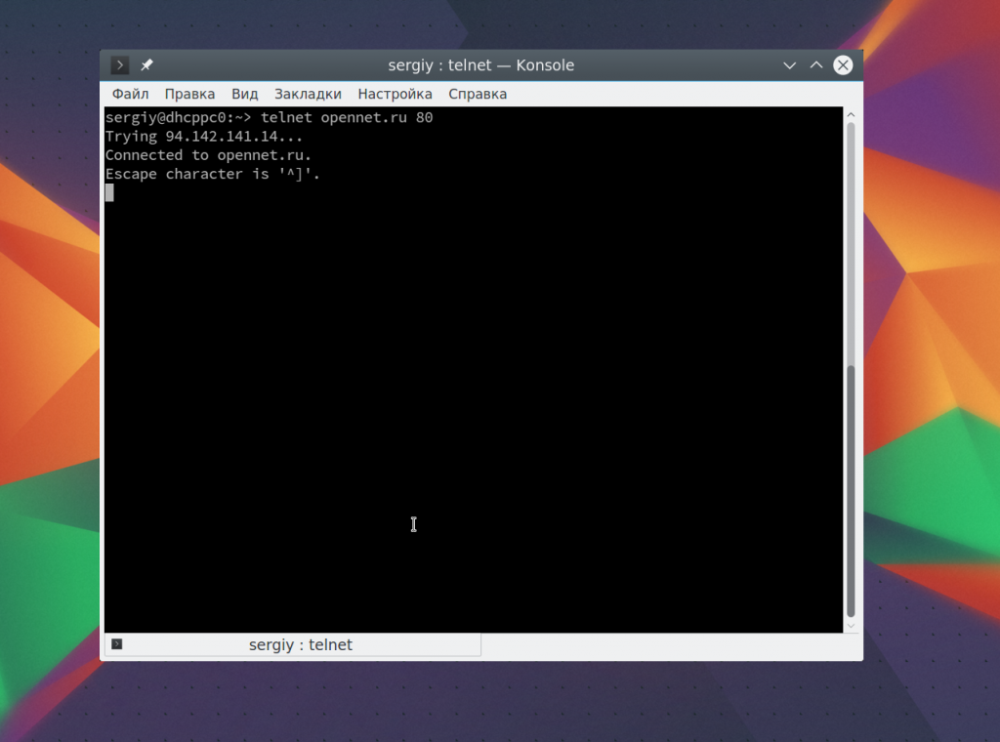
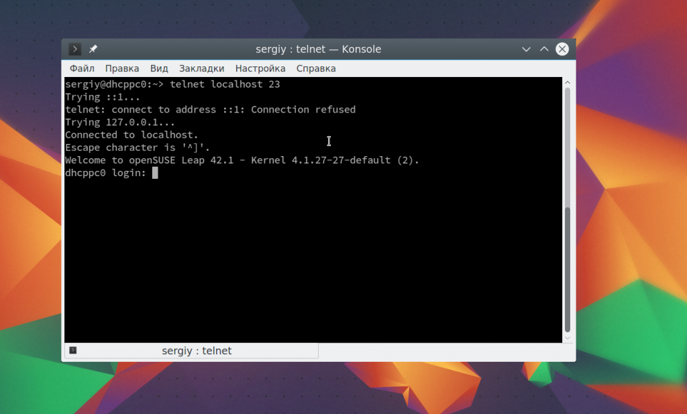

Как пользоваться telnet
КАК ПОЛЬЗОВАТЬСЯ TELNET
Терминал Февраль 17, 2017 5 admin
Telnet - это сетевая утилита, которая позволяет соединиться с удаленным портом любого компьютера и установить интерактивный канал связи, например, для передачи команд или получения информации. Можно сказать, что это универсальный браузер в терминале, который умеет работать со множеством сетевых протоколов.
Эта утилита очень часто использовалась раньше, для удаленного управления компьютером с Linux, но потом ей на замену пришел защищенный протокол SSH. Но telnet все еще используется, например, для тестирования сети, проверки портов, а также для взаимодействия с различными IoT устройствами и роутерами. В этой статье мы рассмотрим что такое telnet, а также как пользоваться telnet для решения своих задач.
Как я уже сказал, эта утилита предназначена для создания интерактивного соединения между удаленными компьютерами. Она работает по протоколу TELNET, но этот протокол поддерживается многими сервисами, поэтому ее можно использовать для управления ими. Протокол работает на основе TCP, и позволяет передавать обычные строковые команды на другое устройство. Он может использоваться не только для ручного управления но и для взаимодействия между процессами.
Для работы с этим протоколом мы будем использовать утилиту telnet, ею очень просто пользоваться. Давайте рассмотрим синтаксис telnet:
$ telnet опции хост порт
Хост - это домен удаленного компьютера, к которому следует подключиться, а порт - порт на этом компьютере. А теперь давайте рассмотрим основные опции:
Это все, что касается команды telnet для установки соединения. Но соединение с удаленным хостом, это только полдела. После установки подключения telnet может работать в двух режимах:
Использование telnet заключается в передаче специальных команд. У каждого сервиса свои команды, но у протокола есть свои команды telnet, которые можно применять в консоли telnet.
Мы не будем рассматривать все команды, поскольку они вам вряд ли понадобятся, а если и понадобятся, то вы легко сможете их найти в официальной документации.
Дальше мы рассмотрим как использовать telnet для решения ваших задач. Обычно, утилита уже установлена в большинстве систем, но если это не так, то вы можете установить telnet из официальных репозиториев, например, в Ubuntu:
sudo apt install telnet
Теперь перейдем к применению утилиты. Изначально она использовалась для удаленного управления компьютером, но поскольку потом был разработан более безопасный протокол SSH, использовать ее перестали.
Утилита все еще может быть полезной при поверке доступности узла, для этого просто передайте ей ip адрес или имя хоста:
telnet 192.168.1.243

Для этого не обязательно применять telnet, есть ping.
C помощью telnet мы можем проверить доступность порта на узле, а это уже может быть очень полезным. Чтобы проверить порт telnet выполните:
telnet localhost 123
$ telnet localhost 22

В первом случае мы видим, что соединение никто не принимает, во втором же выводится сообщение об успешном подключении и приветствие SSH сервера.
Чтобы включить режим отладки и выводить более подробную информацию во время работы используйте опцию -d во время подключения:
sudo telnet -d localhost 22
Использование консоли telnet тоже важный момент в разборе как пользоваться telnet. В основном режиме вы можете выполнять команды, на удаленном сервере, если же вы хотите адресовать команду именно telnet, например, для настройки ее работы, необходимо использовать спецсимвол для открытия консоли, обычно утилита сразу говорит вам что это за символ, например, по умолчанию используется "^[":

Для его активации вам нужно нажать сочетание клавиш Ctrl+[, затем вы уведите приглашение ввода telnet.
Чтобы посмотреть все доступные команды, вы можете набрать ?. Например, вы можете посмотреть статус подключения:
telnet> status

Здесь есть и другие интересные возможности. Такие вещи можно проделывать при любом подключении с помощью утилиты telnet.
Один из распространенных способов использования telnet - это тестирование сайта из консоли. Да, красивую веб-страницу вы не получите, но можете вручную собрать запросы и видеть все переданные сервером данные.
telnet opennet.ru 80
Затем наберите команду веб-серверу:
GET /
Веб сервер вернет полностью страницу, а также заголовки, которые необходимы для ее отображения браузером.
6. УДАЛЕННОЕ УПРАВЛЕНИЕ TELNET
Настоятельно не рекомендуется использовать небезопасный telnet для удаленного управления, потому что все команды и пароли могут быть прослушаны сторонним пользователем. Но иногда, например, для роутеров telnet все же используется для удаленного управления. Все работает точно так же, как и для других подключений, только нужно использовать порт 23, а на удаленном компьютере должен быть установлен telnet-server:
telnet localhost 23
Тут порт можно даже не указывать, потому что по умолчанию будет использоваться именно 23. Далее, вам нужно ввести логин и пароль, а затем вы сможете выполнять команды в удаленной системе.
В этой статье мы рассмотрели примеры использования telnet, а также что представляет из себя эта утилита, хотя она уже не используется по своему основному назначению, но до сих пор может быть полезной многим пользователям и системным администраторам. Если у вас остались вопросы, спрашивайте в комментариях!
Похожие записи:
Нет похожих записей